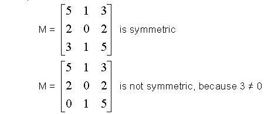

Time Limit: 1 sec
Memory Limit: 16MB
You`re given a square matrix M. Elements of this matrix are Mij: {0 < i < n, 0 < j < n}. In this problem you'll have to find out whether the given matrix is symmetric or not.
Definition: Symmetric matrix is such a matrix that all elements of it are non-negative and symmetric with relation to the center of this matrix. Any other matrix is considered to be non-symmetric. For example:
All you have to do is to find whether the matrix is symmetric or not. Elements of a matrix given in the input are -232 <= Mij <= 232 and 0 < n <= 100.
Test #t: S". Where t is the test number
starting from 1. Line S is equal to "Symmetric" if matrix is symmetric and
"Non-symmetric" in any other case.
2
N = 3
5 1 3
2 0 2
3 1 5
N = 3
5 1 3
2 0 2
0 1 5
Test #1: Symmetric.
Test #2: Non-symmetric.
Problem setters: Aleksej Viktorchik, Leonid Shishlo.
Huge Easy Contest #1